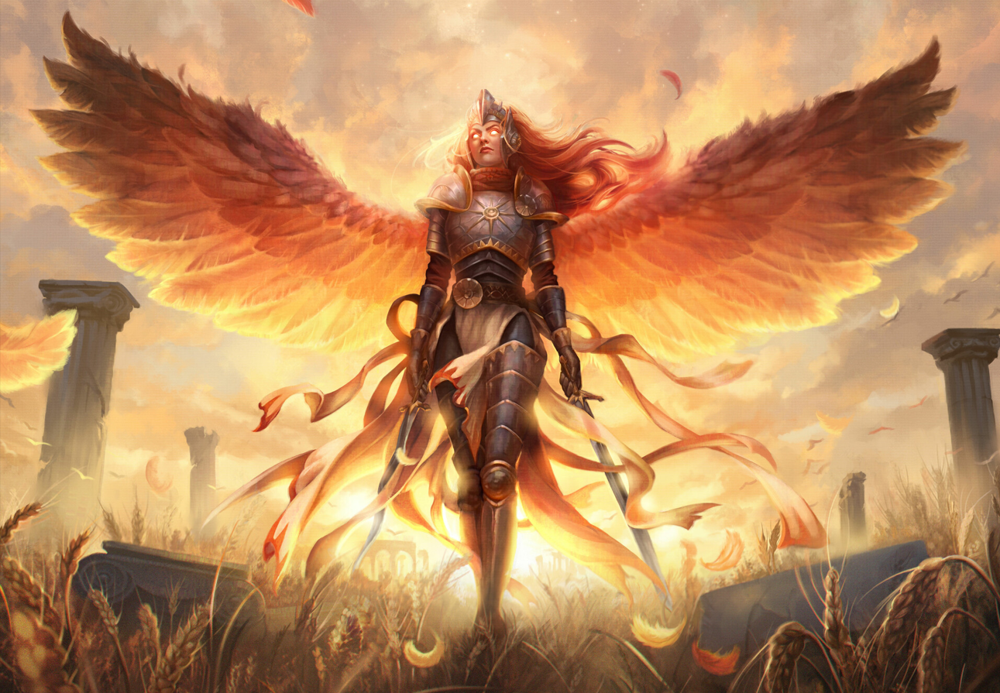

Drel, il porta tempesta

Dominio:
Tempesta, guerra, forza, mare
Allineamento:
C - N
Ordini religiosi affiliati:
Parte del Pantheon dell'Ordine degli ascesi.
s
Aspetto:
Rappresentato come come un uomo muscoloso con barba e capelli corti neri.
Simbolo:
Il suo simbolo sono 2 fulmini incrociati davanti a un mare in tempesta.
Comandamenti:
- Resta nelle ombre lontano dalla luce del bene ma abbastanza illuminato dalla luna per non sprofondare nell'oscurità della malvagità.
Credenti:
- Guerrieri e atleti.
- Marinai.
- Abitanti di isole o città costiere.
- Alcuni Lacer dell'acqua
- Più in generale chi rincorre la vittoria o cerca tempo sereno.
Giorno sacro/festività:
Vigilia della notte più lunga dell'anno.
Miti:
- Sesta divinità reata da Ydur.